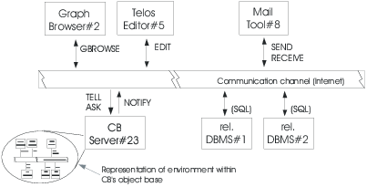

ConceptBase.cc is a deductive object base management system for meta databases. Its data model is a conceptual modeling language making it particularily well-suited for design and modeling applications. Its underlying data model allows to uniformly represent data, classes, meta classes, meta meta classes etc. yielding a powerful metamodeling environment. The system has been used in projects ranging from development support for data-intensive applications [JJQV99], requirements engineering [RaDh92, Eber97, NJJ*96], electronic commerce [QSJ02], and version&configuration management [RJG*91] to co-authoring of technical documents [HJEK90]. It has mostly been used in academia for developing specialized modeling languages by means of metamodeling [JJS*99, JJM*09, Jeus09].
The key features distinguishing ConceptBase.cc from other extended DBMS and meta-modeling systems are:
ConceptBase.cc implements the version O-Telos (= Object-Telos) of the knowledge representation language Telos [MBJK90]. O-Telos integrates a thoroughly axiomatized structurally object-oriented kernel with a predicative assertion language in the style of deductive databases. A complete formal definition can be found in [JGJ*95, Jeus92]. O-Telos is purely based on deductive logic but it also supports a frame-like representation of facts.
This user manual is tightly integrated with the ConceptBase.cc Forum. The ConceptBase.cc Forum is an Internet-based workspace where ConceptBase.cc developers and users share knowledge and example models. It contains numerous examples on how to solve certain modeling problems. It is highly recommended to join the workspace. More details are available at link.
ConceptBase.cc is mainly used for metamodeling and for engineering customized modeling languages. The textbook [JJM*09]
Jeusfeld, M.A., M. Jarke, and J. Mylopoulos:
Metamodeling for Method Engineering.
Cambridge, MA, 2009. The MIT Press, ISBN-10: 0-262-10108-4.
introduces into the topic and provides six in-depth case studies ranging from requirements engineering to chemical device modeling. The book and this user manual are complementary to each other.
The language underlying ConceptBase, Telos, has been one of the earliest attempts to integrate deductive and object-oriented data models [Stan86, MBJK90]. The O-Telos [Jeus92] dialect supported in ConceptBase.cc takes a conservative integration approach, with the main design goals of semantic simplicity, symmetry of deductive and object views, flexibility and extensibility. This emphasis, technically supported by a careful mapping of Telos to Datalog with negation, has paid off both in user acceptance and ease of implementation. In essence, ConceptBase.cc is based on deductive database technology woth object-oriented abstraction principles like object identity, class membership, specialization and attribution being coded as pre-defined deductive rules and integrity constraints.
Development of ConceptBase.cc started in late 1987 in the context of ESPRIT project DAIDA [Jark93] and was continued within ESPRIT Basic Research Actions Compulog 1 and 2 (1989 – 1995), the ESPRIT LTR project DWQ (Foundations of Data Warehouse Quality, 1996-1999), and the ESPRIT project MEMO (Mediating and Monitoring Electronic Commerce, 1999-2001). Versions have been distributed for research experiments since early 1988. ConceptBase.cc has been installed at more than eight hundred sites worldwide and is seriously used by about a dozen research projects in Europe, Asia, and the Americas.
The direct predecessor of O-Telos is the knowledge representation language Telos (specified by John Mylopoulos, Alex Borgida, Martin Stanley, Manolis Koubarakis, and others). Telos was designed to represent information about information systems, esp. requirements. Telos was based on CML (Conceptual Modeling Language) developed in the mid/late 1980-ties. A variant of CML was created under the label SML (System Modeling Language)1 and implemented by John Gallagher and Levi Solomon at SCS Hamburg. CML itself was based on RML (Requirements Modeling Language) developed at the University of Toronto by Sol Greenspan and others. Neither RML nor CML were implemented in 1987. They were regarded as theoretic knowledge representation languages with ’possible world semantics’. SML was implemented as a subset of CML using Prolog’s SLDNF semantics.
In 1987, we decided to start an implementation of Telos and quickly realized that the original semantics was too complex for an efficient implementation. The temporal component of Telos included both valid time (when an information is true in the domain) and transaction time (when the information is regarded to part of the knowledge base). The temporal reasoner for the valid time was based on Allen’s interval calculus and was co-NP-hard. We implemented both temporal dimensions in ConceptBase.cc V3.0 only to see that there were undesired effects with the query evaluator and the uniform representation of information into objects. Specifically, the specialization of a class into a subclass could have a valid time which could be incomparable to the valid time of an instance of the subclass. Any change in the network of valid time intervals could change the set of instances of a class. Because of that, we dropped the valid time as a built-in feature of objects but we kept the transaction time. A few other features like the declarative TELL, UNTELL and RETELL operations as proposed by Manolis Koubarakis in his master thesis on Telos were only implemented in a rather limited way - essentially forbidding direct updates to derived facts. On the other hand, O-Telos extends the universal object representation to any piece of explicit information and reduces the number of essential builtin objects to just five. So, some of the roots of Telos in artificial intelligence were abandoned in favor of a clear semantics and of better capabilities for metamodeling.
Since we wanted to be able to manage large knowledge bases (millions of concepts rather than a few hundred), we decided to select a semantics that allowed efficient query evaluation. Telos included already features for deductive rules and integrity constraints. Thus, the natural choice was DATALOG with perfect model semantics. The deductive rule evaluator and the integrity checker were ready in 1990. A query language ("query classes") followed shortly later. O-Telos exhibits an extreme usage of DATALOG:
O-Telos should be regarded as the data modeling language of a meta database. It is capable to represent semantic features of other (data) modeling languages like entity-relationship diagrams and data flow diagrams. Once modeled as meta classes in O-Telos, one simply has to tell the meta classes to ConceptBase.cc to get an evironment where one can manipulate models in these modeling languages. Since all abstraction levels are supported, the models themselves can be represented in O-Telos (and thus be managed by ConceptBase).
ConceptBase’s implementation of O-Telos provides a couple of features beyond the core O-Telos. First of all, there is a dedicated query language CBL, which provides a class-based interpretation for queries. Secondly, modules have been introduced to structure the search space. Essentially, the module identifier is added to the object identifier. Thirdly, ConceptBase.cc supports a limited version of active rules to react to internal and external events. Finally, ConceptBase.cc supports recursively defined functions and arithmetic expressions.
A performance comparison [Lud2010] of ConceptBase.cc with Protegé/Racer found that ConceptBase.cc is orders of magnitude faster for queries. It lacks however the reasoning capabilities of Protegé/Racer.
ConceptBase.cc 8.0 follows a client-server architecture. Clients and servers run as independent processes which interact via inter-process communication (IPC) channels (Fig. 1-1). Although this communication channel was initially meant for use in local area networks, it has been used successfully for nationwide and even transatlantic collaboration of clients on a common server.
The ConceptBase.cc server (CBserver) offers programming interfaces that allow to build clients and to exchange messages in particular for updating and querying object bases using the Telos syntax. We provide support for Java and to a very limited degree for C/C++. Descriptions of the interfaces and the corresponding libraries that are delivered with ConceptBase.cc can be found in the ConceptBase.cc Programmers Manual, available via the CB-Forum at link. We like to note that the C/C++ interfaces were not maintained since we switched the user interface to Java.
Besides the Java/C API, the CBShell client (see section 7) can be used to interact with a CBserver via the command line or in shell scripts. CBShell is indeed a Java client of the CBserver. The CBShell can also serve as an example client for programming own application specific client tools. There is also a tool that creates an HTTP interface to a CBserver, see section BrokerReproxy in the CB-Forum link. Clients would then interact with ConceptBase via HTTP requests.

Figure 1.1: The client-server architecture of ConceptBase.cc
ConceptBase.cc comes with a standard usage environment implemented in Java which supports editing, ad-hoc querying and browsing (CBIva). The tool CBGraph supports editing diagrams extracted from the database, and CBShell is a command line shell for interacting with the database.
Although ConceptBase.cc provides multi-user support and an arbitrary number of clients may be connected to the same server process, ConceptBase.cc does not yet support concurrency control beyond a forced serialization of messages.
The ConceptBase.cc server (CBserver) can be compiled on at least the following platforms2 including
Pre-compiled binaries are provided for Linux. Compilation from the ConceptBase.cc sources on Mac OS-X and Windows and other platforms should be possible as well, though we cannot provide support for them. See instructions distributed with the ConceptBase.cc source files for further details.
Implementation languages for the CBserver are Prolog3 (in particular for logic-based transformation and compilation tasks) and C/C++ (in particular for persistent object storage and retrieval).
The ConceptBase.cc usage environment (CBIva, CBGraph, CBShell) executes on any platform with a compatible Java Virtual Machine. Java 6, Java 7, or Java 8 should all work. We recommend the most recent stable version of Java 7 or Java 8.
The CBserver is dynamically linked with a couple of shared libraries. Under Linux/Unix can check whether all required libraries are installed by
export PATH=$CB_HOME/bin:$PATH ldd $CB_HOME/`CBvariant`/bin/CBserver
The installation of ConceptBase.cc requires about 50 MB of free hard disk space. The main memory requirements depend on the size of the object base loaded to the ConceptBase.cc server. The initial main memory footprint is just about 8 MB. We recommend about 20 MB of free main memory for small applications and 200 MB and higher for large applications of ConceptBase.cc. The server can handle relatively large databases consisting of a few million objects. Response times depend on the size of the database and even more on the structure of the query.
Since clients connect to a CBserver via Internet, the server requires the TCP/IP protocol to be available on both the client and the server machine (can be the same computer for single-user scenarios). Note that a firewall installed on the path between the client and the server machine might block remote access to a CBserver. The default port number used for the communication between server and client is 4001. It can be set to another port number by a command line parameter.
The CBserver is by default multi-user capable, i.e. multiple clients can connect to the same CBserver. This feature is by default disabled when you start the CBserver from within the user interface. See section 6 for more details.
The standard ConceptBase.cc client are CBIva and CBGraph (see section 8). The distribution also contains a client CBShell that can be used to interact with a ConceptBase.cc server using a command/shell window. The CBShell client can also be used to run non-interactive scripts, e.g. for loading a sequence of files with Telos source models into the CBserver.
This manual provides detailed information about using ConceptBase.cc. Information about the installation procedure can be found in the Installation Guide in directory doc/TechInfo. New users are advised to follow the installation guide for getting the system started and then to work through the ConceptBase.cc Tutorial. More information about the knowledge representation mechanisms, the applications, and the implementation concepts can be found in the references. Chapter 2 describes the ConceptBase.cc version of the Telos language and gives some examples for its usage. Chapter 6 discusses the parameters that can be set when starting the CBserver. Finally, section 8 describes the ConceptBase.cc Usage Enviroment.
Appendices contain a formal definition of the Telos syntax and internal data structures (A). Appendix C summarizes the mechanism for assigning graphical types to objects and adapting the graphical browsing tool for specific application needs. Appendix D contains the full Telos notation of an example model (D.1) and a case study on the modeling of entity-relationship diagrams with Telos (D.2). Plenty of further examples for particular application domains and add-ons for metamodeling can be retrieved from the ConceptBase.cc Forum at link.
ConceptBase.cc 8.0 should be largely source-compatible to its direct predecessor. The binary database files and the graph files have a new format and are not compatible with their counterparts created by earlier releases.
The CBserver has now the ability to maintain module sources and query results formatted in external formats in the file system. The module sources allow to co-develop models both via the ConceptBase.cc user interface and by external text editors. Exporting query results in external formats is useful when they are post-processed by external tools. For example, one can generate program source code from a ConceptBase.cc model and have that code processed by a compiler.
The active rule component now supports constructs to enforce a transactional execution of delayed triggers. Triggers can be passed to different queues that are processed with different priorities. This feature allows to delay certain triggers until the consequences of the current trigger are all processed.
The graph editor is now a stand-alone tool and has the ability to store connection details plus a snapshot of the module sources in its graph files. The graph files are then self-contained and can be viewed and updated without having to maintain the module sources elsewhere. It also can display a background image in the graph window. Nodes can now be configured to be resizable. Lines are now drawn with anti-aliasing, yielding much better graph images.
The CBShell utility now behaves more like a Linux/Unix shell. It provides easy shortcuts like ’cd’ for changing the module context. It also allows the use of positional parameters, hence making it a better companion to Linux/Unix scripts.
The release notes to ConceptBase.cc 8.0 lists all major changes and issues. You find the release notes in the subdirectory doc/TechInfo of your ConceptBase.cc installation directory or via the web site link.
The system still has about the same memory footprint as it used to be 10 years ago. You can easily install the complete system for all supported platforms on a 32 MB memory stick.
ConceptBase.cc is distributed under a FreeBSD-style copyright license since June 2009. Both binary and source code are available via link.
The FreeBSD-style copyright license of ConceptBase.cc reads like follows:
The ConceptBase.cc Copyright
Copyright 1987-2017 The ConceptBase Team. All rights reserved.
Redistribution and use in source and binary forms, with or without modification, are permitted
provided that the following conditions are met:
1. Redistributions of source code must retain the above copyright notice, this list of
conditions and the following disclaimer.
2. Redistributions in binary form must reproduce the above copyright notice, this list of
conditions and the following disclaimer in the documentation and/or other materials
provided with the distribution.
THIS SOFTWARE IS PROVIDED BY THE CONCEPTBASE TEAM ``AS IS'' AND ANY EXPRESS OR IMPLIED WARRANTIES,
INCLUDING, BUT NOT LIMITED TO, THE IMPLIED WARRANTIES OF MERCHANTABILITY AND FITNESS FOR A
PARTICULAR PURPOSE ARE DISCLAIMED. IN NO EVENT SHALL THE CONCEPTBASE TEAM OR CONTRIBUTORS BE
LIABLE FOR ANY DIRECT, INDIRECT, INCIDENTAL, SPECIAL, EXEMPLARY, OR CONSEQUENTIAL DAMAGES
(INCLUDING, BUT NOT LIMITED TO, PROCUREMENT OF SUBSTITUTE GOODS OR SERVICES; LOSS OF USE, DATA,
OR PROFITS; OR BUSINESS INTERRUPTION) HOWEVER CAUSED AND ON ANY THEORY OF LIABILITY, WHETHER IN
CONTRACT, STRICT LIABILITY, OR TORT (INCLUDING NEGLIGENCE OR OTHERWISE) ARISING IN ANY WAY OUT
OF THE USE OF THIS SOFTWARE, EVEN IF ADVISED OF THE POSSIBILITY OF SUCH DAMAGE.
The views and conclusions contained in the software and documentation are those of the authors
and should not be interpreted as representing official policies, either expressed or implied,
of the ConceptBase Team.
This license makes ConceptBase.cc free software as promoted by the Free Software Foundation. The license is upwards-compatible to the GNU Public License (GPL), i.e. developers can combine GPL-ed software with ConceptBase software as long as they include the above FreeBSD-style license for the ConceptBase components. It should also be compatible with many other free license models. The source code is copyrighted by The ConceptBase Team, consisting of all contributors to the source code at the central code repository of the system.
You are welcome to contribute the ConceptBase.cc project! Join the ConceptBase.cc Forum at link to do so. We are also happy to learn about your research/application, in which ConceptBase.cc plays a role. If you publish results of your work, then please include a reference pointing to this user manual and/or to the standard ConceptBase.cc reference [JGJ*95].
The ConceptBase.cc system is published under the liberal FreeBSD-style license, which allows commercial use and even modification of the source code. This user manual is however published under a less liberal copyright license. Use is permitted for private and academic purposes. Moreover, commercial users may use the manual to self-study the ConceptBase system. Only members of The ConceptBase Team, see link, are allowed to modify the user manual. Re-publication of the user manual in print or online is not permitted. If you make changes to your own copy of the source code of ConceptBase.cc, then you may not document them in this user manual (or its sources). You rather should write a companion report that lists the differences of your version of ConceptBase.cc to the user manual distributed via the home page of ConceptBase.cc (link).
The ConceptBase.cc Forum (link) contains material submitted by different authors. The default license for the material on the CB-Forum is "Creative Commons BY-NC 4.0", which does not permit commercial use of its content.
The ConceptBase.cc logo at link is created and copyrighted by Manfred Jeusfeld. It may be used on official ConceptBase.cc web sites, the ConceptBase.cc User Manual and Tutorials, and the ConceptBase.cc Forum. It may also be included in binary distributions created by members of the ConceptBase Team. If you are not a member of the ConceptBase.cc Team and like to use the logo for your own binary distribution of ConceptBase.cc, then you need to ask the copyright holder for a permission.
All trademarks are owned by their respective owners. This report may contain flaws based on human errors. We disclaim liability for any such flaws. It may also be that the ConceptBase.cc does not provide all functionality described in this report, or that the functionality is provided by other mechanisms as described in this report. Links to external websites are provided for informational (academic) purposes. We disclaim responsibility for the views expressed on these websites.
We sometimes use the short form ConceptBase. We then always refer to ConceptBase.cc.
{kind=link}